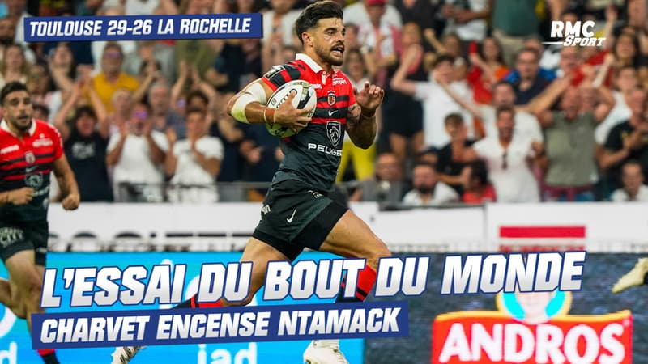

Top 14: ¡Toulouse le ganó 29-26 a La Rochelle y es el campeón!

Tal como sucedió en 2021, Toulouse y La Rochelle volvieron a verse las caras en
una definición de Top 14 que fue tan apasionante como incierta y con un marcado
suspenso hasta el último minuto. Con un try de Santiago Chocobares, el conjunto
de Ugo Mola venció al de Ronan O'gara por 29 a 26 y sumó su título número 22.